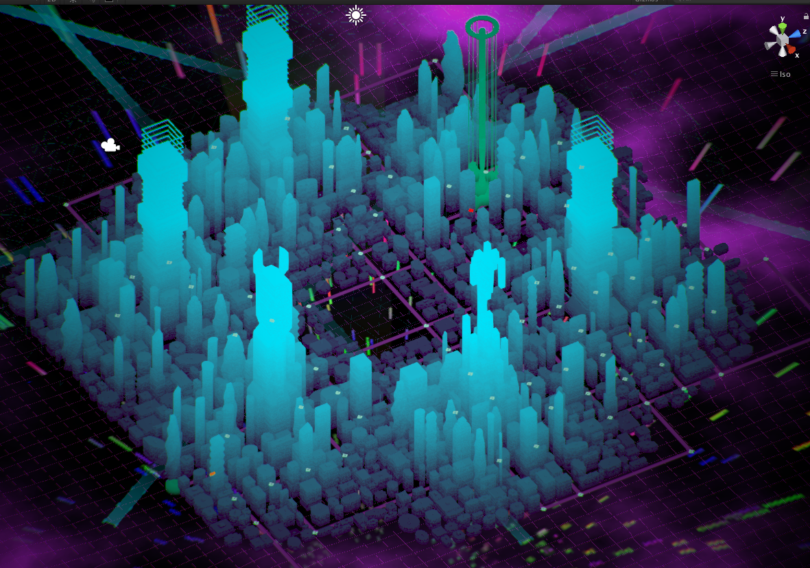

Stew McKinney
Game Project
Working Title:TND
A real-time survival game in which you race to save a planet-city from total destruction.
Stay tuned
The game is still a little too rough to show footage of.
There are some working systems, but integrating them has caused a few bugs.
While I sort that out, here are a few interesting images I can share, all WIP.
The city is entirely randomly generated. Here is the first level:

Building meshes are also dynamically generated by code and change based on location on the map.
Here's a quick look at an 'arena', where real time conflict occurs.
I'm excited to show you the rest of this when it's ready.